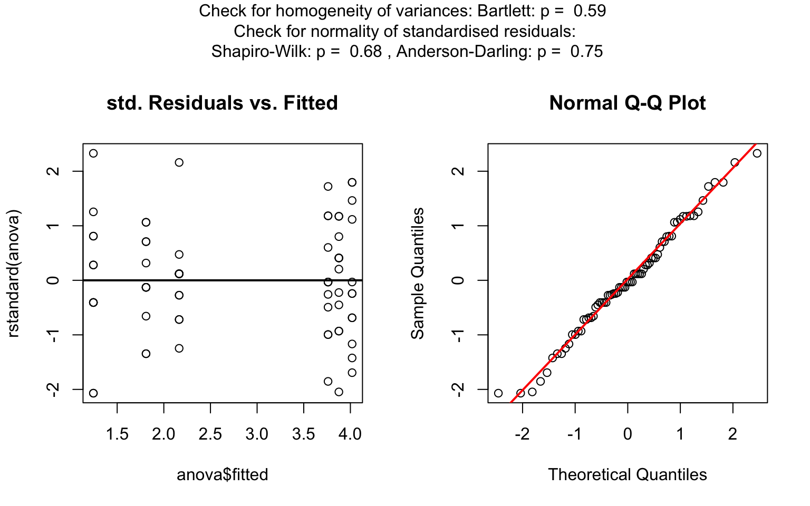

output: rmarkdown::github_document #output: rmarkdown::html_vignette editor_options: markdown: wrap: 72 —
Visualization of the statistical hypothesis test between two groups of categorical or numerical data.
Statistical consulting requires often both a quick first visualization and a reproducible statistical analysis of the presented raw data. The package visStatistics with its core function visstat() fulfils this need. Based on a decision tree it picks the statistical hypothesis test with the highest statistical power between the dependent variable (response) varsample and the independent variable (feature) varfactor. The corresponding test statistics including eventual post-hoc-analysis are returned and a graph showing key statistics of the underlying test is generated.
This fully automated workflow is especially suited for browser based interfaces to server-based deployments of R and has been successfully implemented to analyse medical raw data in an unbiased fashion.
A detailed description of the package’s functionality and its underlying decision tree, can be found in the vignette accompanying this package.
Implemented tests
lm(), t.test(), wilcox.test(), aov(), kruskal.test(), fisher.test(), chisqu.test()
Implemented tests to check the normal distribution of standardized residuals
shapiro.test() and ad.test()
Implemented post-hoc tests
TukeyHSD() for aov()and pairwise.wilcox.test() for kruskal.test()
Installation from CRAN
- Install the package
install.packages("visStatistics") - Load the package
library(visStatistics)
Installation from GitHub (always latest, developing version)
- Install the devtools package from CRAN. Invoke R and type
install.packages("devtools") - Load the devtools package.
library(devtools) - Install the package from the github-repository
install_github("shhschilling/visStatistics") - Load the package
library(visStatistics) - Help on the function usage
?visstat
Getting Started
The package vignette allows you to get familiar with all features of visStatistics. It documents in detail the algorithm of the decision tree illustrated by examples.
Examples
Welch Two Sample t.test

Wilcoxon rank sum test with continuity correction
visstat(ToothGrowth, "len", "supp")
#> Warning in wilcox.test.default(x = DATA[[1L]], y = DATA[[2L]], ...): cannot
#> compute exact p-value with ties
Kruskal-Wallis test
The generated graphs can be saved in all available formats of the Cairo package. Here we save the graphical output of type “pdf” in the plotDirectory tempdir():
Linear Regression
linreg_cars <- visstat(cars, "dist", "speed")

Increasing the confidence level conf.level from the default 0.95 to 0.99 leads two wider confidence and prediction bands:


Pearson’s Chi-squared test
Count data sets are often presented as multidimensional arrays, so-called contingency tables, whereas visstat() requires a data.frame with a column structure. Arrays can be transformed to this column wise structure with the helper function counts_to_cases():
HairEyeColorDataFrame <- counts_to_cases(as.data.frame(HairEyeColor))
visstat(HairEyeColorDataFrame, "Hair", "Eye")

Fisher’s exact test
HairEyeColorMaleFisher <- HairEyeColor[, , 1]
# slicing out a 2 x2 contingency table
blackBrownHazelGreen <- HairEyeColorMaleFisher[1:2, 3:4]
blackBrownHazelGreen <- counts_to_cases(as.data.frame(blackBrownHazelGreen))
fisher_stats <- visstat(blackBrownHazelGreen, "Hair", "Eye")

For details regarding the generated mosaic plots, please refer to the mosaic() in the vcd package.